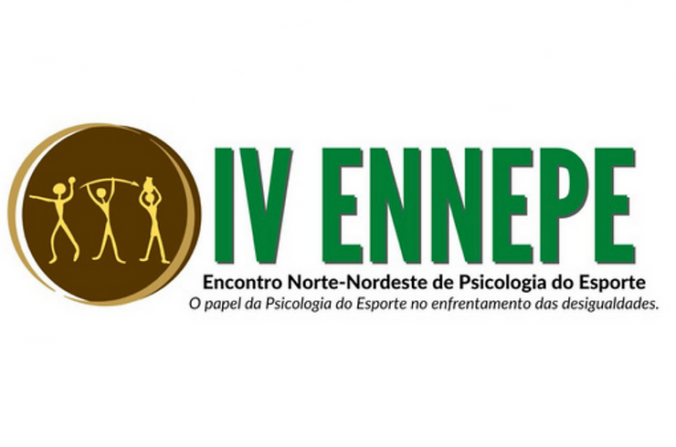

Vem aí o IV Encontro Norte-Nordeste de Psicologia do Esporte – ENNEPE. Coloque na sua agenda: 22 e 23 de outubro de 2022, em Teresina-PI. O tema é O PAPEL DA PSICOLOGIA DO ESPORTE NO ENFRENTAMENTO DAS DESIGUALDADES.
O ENNEPE tem sua história entrelaçada com a ABRAPESP . Na edição de 2016, em São Luís-MA, e teve apoio da ABRAPESP, que enxergou a necessidade de descentralizar a Psicologia do Esporte, fomentando espaços de formação, articulação e trocas profissionais nas mais diversas regiões do país.
Em 2018, na sua segunda edição, em Fortaleza-CE, a ABRAPESP apoiou o evento, auxiliando em toda a organização, além da presença de diversos membros da gestão 2018-2019 em suas atividades.
Em 2020, o evento estava previsto para acontecer em Manaus-AM, marcando presença da Região Norte. Mas devido à pandemia do COVID-19, ocorreu de modo online, organizado por profissionais e estudantes daquela cidade, sob liderança do psicólogo Matheus Vasconcelos. O III ENNEPE ficou na história da Psicologia do Esporte, como um evento de resistência que, apesar de todas as dificuldades decorrentes do período complexo que vivemos, tornou possível unir profissionais de diversas regiões do país e construir novas possibilidades e olhares em torno da psicologia do esporte em âmbito nacional e com mais de 250 inscritos. Parceiros, saímos desta experiência convictos de que a Psicologia do Esporte no Brasil tem sido feita de forma ética, justa, respeitosa e com qualidade.
Chegamos ao IV ENNEPE com ótima notícia: 25% de desconto aos sócios e sócias da ABRAPESP, usando o cupom ABRAPESP2022
E fiquem atentos aos prazos para usufruir das melhores taxas. Acesse https://www.even3.com.br/ennepe2022/ e faça sua inscrição.